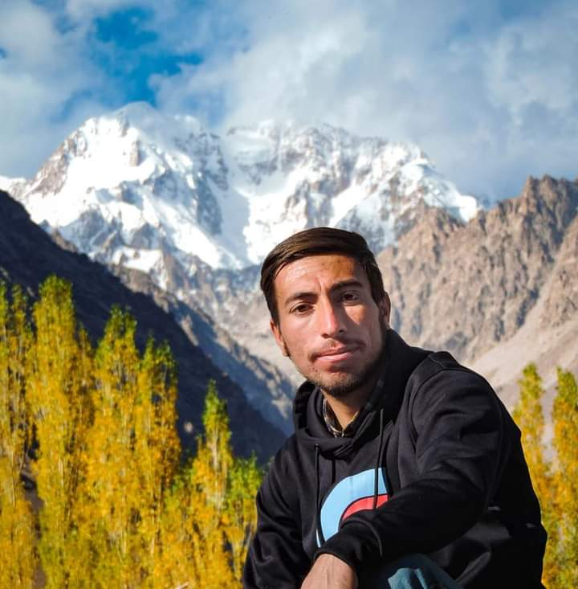

Our Founder

Didar Ali
Didar Ali, a versatile individual whose journey blends technology, exploration, and creativity. Hailing from Chitral, he embodies a deep
appreciation for nature and diverse cultures. As a traveler and guide,Didar immerses himself in the landscapes of Chitral,
capturing captivating stories through his lens.
Additionally, his expertise in coding and web development allows him to craft innovative digital experiences. Didar's photography
showcases his eye for detail, transforming moments into art. Through his diverse pursuits, Didar
invites others to join him on a journey of exploration and inspiration.
Photographer
Mirza Aslam Baig
Introducing Mirza Aslam Baig, a talented photographer hailing from the picturesque region of Chitral. With an innate passion for capturing the beauty of his surroundings, Mirza's photographs transport viewers to enchanting landscapes and evoke a sense of wonder. Through his lens, he paints vivid narratives that showcase the rich cultural tapestry and breathtaking scenery of Chitral. As a web developer, I have had the privilege of incorporating Mirza's stunning images into my website, enriching the digital experience for visitors and providing a glimpse into the awe-inspiring world he captures with such finesse. Mirza's work serves as a testament to his artistic vision and deep connection to his homeland, inviting others to share in the splendor of Chitral's natural wonders through his captivating photographs.
Facebook Instagram